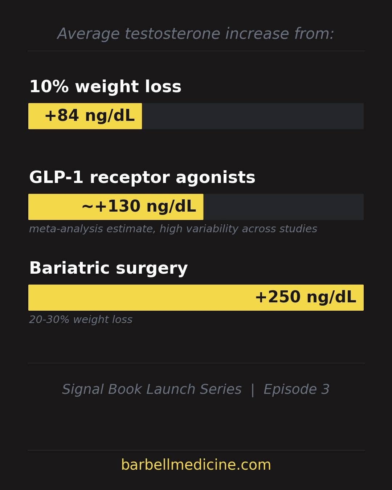

A 10% reduction in body weight raises testosterone by 84 ng/dL on average. Bariatric surgery, which produces 20 to 30% weight loss, raises it by roughly 250 ng/dL. GLP-1 receptor agonists fall somewhere between those two, proportional to the weight loss. Weight loss would make many TRT prescriptions unnecessary.
The mechanism runs through two pathways that reinforce each other. Visceral fat is rich in aromatase, an enzyme that converts testosterone to estradiol before it can reach its targets. The resulting estradiol feeds back on the hypothalamus and suppresses GnRH production, which reduces LH, which reduces testosterone output from the testes. More visceral fat means more aromatase activity, lower testosterone, and lower testosterone promotes more visceral fat storage. The loop runs in both directions.
The second pathway involves leptin. You've probably heard that leptin resistance explains why people with obesity stay hungry despite elevated leptin. The evidence for that framing is weak. The brain does respond to high leptin. What it does is downregulate a group of neurons in the hypothalamus called kisspeptin neurons, which drive GnRH production. It's the same end result, but with a different trigger. Chronically elevated leptin turns the signal down. This is why the 7 to 10% weight loss threshold tends to produce a disproportionate jump in testosterone. At that point, leptin drops enough that the brake begins to release.
Both pathways are reversible.
For most men with low testosterone, the number on the lab report is downstream of body composition, sleep, and energy availability. The testes are doing exactly what the signals they're receiving tell them to do. A prescription that adds testosterone without asking what's running the pathway treats the output of a broken chain without looking at where the chain broke.
Episode 3 of our Signal book launch series is live now. Link in comments.
What questions do you have about testosterone?

 ▶Video · YouTube · Barbell MedicineWhat’s Actually Driving Your Testosterone Down?Most cases of low testosterone in modern men are not a problem with the testes. The number is downstream of body composition, sleep, and energy availability. The wellness-clinic algorithm walks past every one of them. Jordan and Austin walk through what actually drives men’s testosterone down, the mechanisms behind it, and the modifiable levers that bring…m.youtube.com
▶Video · YouTube · Barbell MedicineWhat’s Actually Driving Your Testosterone Down?Most cases of low testosterone in modern men are not a problem with the testes. The number is downstream of body composition, sleep, and energy availability. The wellness-clinic algorithm walks past every one of them. Jordan and Austin walk through what actually drives men’s testosterone down, the mechanisms behind it, and the modifiable levers that bring…m.youtube.com